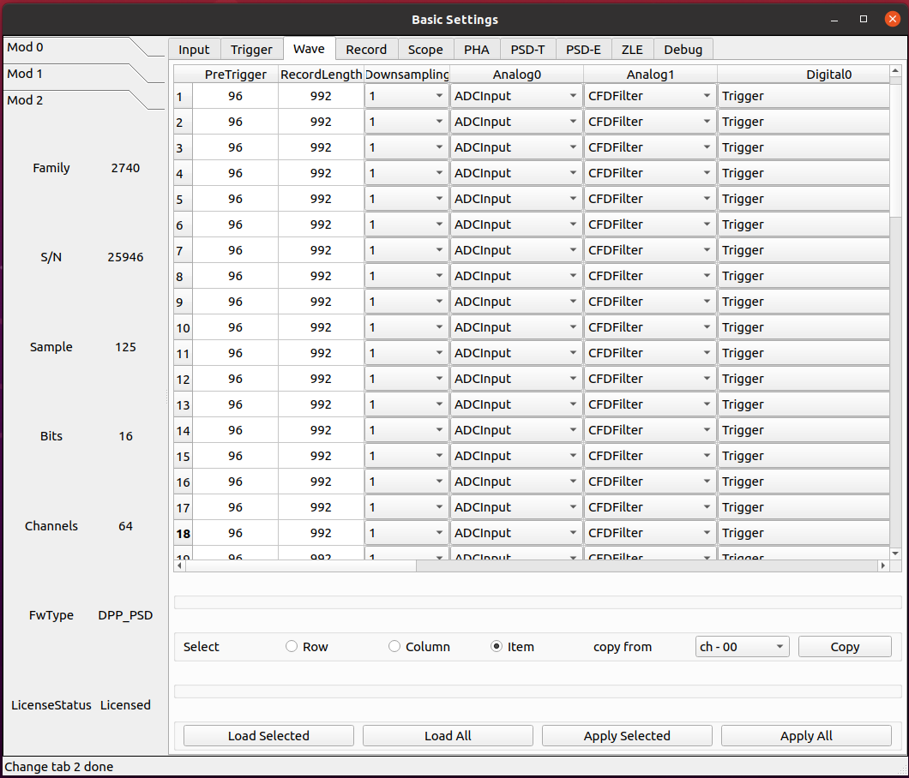
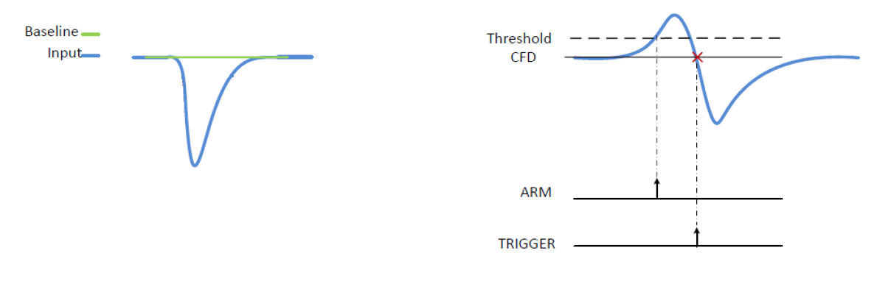
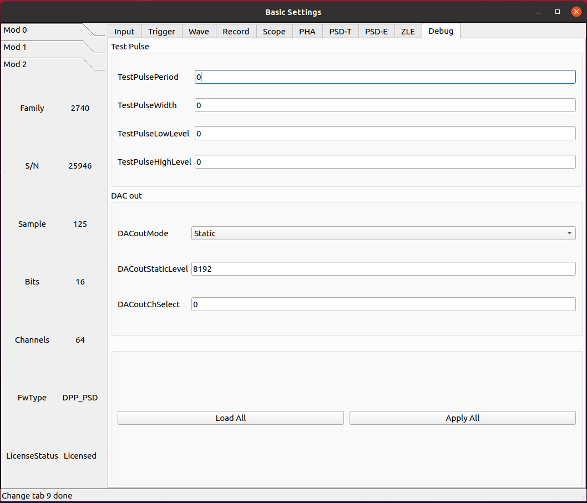

PSD 固件
基本参数配置
输入信号
参数 InputDelay
设置输入延迟，单位为采样点。
该值设置每 4 个通道共用一个相同配置。
参数 ChEnable
独立设定每个通道是否开启使用。如果通道不启用，它不提供任何数据，同时它的自触发也关闭。
参数 WaveSource
在正常模式下，采集的波形来源于模拟输入的 A/D 转换产生的 ADC 采样序列。出于测试目的，可以用内部数据生成器替换 ADC 数据。
- ADC_DATA
Data from the ADC (normal operating mode)
- ADC_TEST_TOGGLE
Toggle between 0x5555 and 0xAAAA (test mode)
- ADC_TEST_RAMP
16-bit ramp pattern (test mode)
- ADC_TEST_SIN
8-point sine wave test pattern
- ADC_TEST_PRBS
16-bit PRBS generated by a 23-bit PRBS pattern generator (test mode)
- Ramp
Data from a ramp generator. It is actually a 16-bit field, where the 6 most significant bits identify the channel and the 10 less significant bits are the samples of a ramp from 0x000 up to 0x3FF (i.e. 0 to 1023). It is so a 10-bit ramp with offset given by “channel*1024”. For channel 0, it is a counter from 0 to 1023; for channel 1, it is a counter from 1024 to 2047, and so on
- IPE
Not implemented
- SquareWave
Internally generated programmable square wave
参数 DCOffset
对于每个通道，将恒定的 DC 偏移（由 16 位 DAC 控制）添加到模拟输入，以在 ADC 的动态范围内调整信号基线的位置（即模拟输入的“零伏”）。
由于部件的公差，有必要校准偏移 DAC。校准是通过工厂测试完成的，通常不需要重新校准。然而，可以执行新的校准。校准参数存储在板的闪存中，并在通电时加载。每次写入或读取 DCoffset 参数时，内部逻辑会自动应用这些参数。
DCoffset 参数为数字，单位为满刻度的百分比。当 DCoffset为 0 时，输入信号的基线处于 ADC 0。当 DCoffset 为 100 时，输入信号的基线处于 ADC $2^{NBIT}-1$。
参数 Polarity
设置输入脉冲的极性。
- Positive
Positive polarity
- Negative
Negative polarity
参数 VGAGain
2745 特有。
以 0.5 dB 为步长设置可变增益放大器（VGA）的增益。参数设置每 16 个通道为一组， 64 通道分为 4 组。最小可设置为 0，最大为 40。
触发
参数 WaveTriggerSource
允许设置波形的触发源。
设置此参数意味着获得包括波形和相关时间戳以及能量信息的事件。
- Disabled
No trigger source enabled for the waveform
- Ch64Trigger
One (or more) channel self-trigger can generate a trigger for a waveform
- ChSelfTrigger
Channel self-trigger can generate a trigger for a waveform
- SwTrg
Software Trigger can generate a trigger for a waveform
- ADCOverSaturation
ADC Oversaturation can generate a trigger for a waveform
- ADCUnderSaturation
ADC Undersaturation can generate a trigger for a waveform
- ExternalInhibit
Inhibit can generate a trigger for a waveform
- TRGIN
External TRGIN can generate a trigger for a waveform
- GlobalTriggerSource
Acquisition Trigger Source (the same of the Scope mode) can generate a trigger for a waveform
- LVDS
A signal on the LVDS connectors can generate a trigger for a waveform
- ITLA
Internal Trigger Logic A can generate a trigger for a waveform
- ITLB
Internal Trigger Logic B can generate a trigger for a waveform
参数 EventTriggerSource
允许设置时间、能量（T-E）事件的触发源。设置此参数意味着获取包括时间戳和能量信息的事件。
- Disabled
No trigger source enabled for the T-E event
- Ch64Trigger
One (or more) channel self-trigger can generate a trigger for a T-E event
- ChSelfTrigger
Channel self-trigger can generate a trigger for a T-E event
- SwTrg
Software Trigger can generate a trigger for a T-E event
- TRGIN
External TRGIN can generate a trigger for a T-E event
- GlobalTriggerSource
Acquisition Trigger Source (the same of the Scope mode) can generate a trigger for a T-E event
- LVDS
A signal on the LVDS connectors can generate a trigger for a T-E event
- ITLA
Internal Trigger Logic A can generate a trigger for a T-E event
- ITLB
Internal Trigger Logic B can generate a trigger for a T-E event
参数 TriggerThr
相对于滤波之后的波形的设置阈值。
参数 SelfTriggerWidth
产生自触发信号的数字前沿甄别器的输出可以在“线性”模式下使用，这意味着它会持续信号保持在阈值以上（或以下）的时间，从而充当“过阈值”信号，或者可以通过可编程门产生器，使其成为固定宽度的脉冲。门产生器是不可再触发的单稳态，当超过阈值时变高，在编程时间后变低。该参数定义了过阈值的固定宽度脉冲。
波形
参数 PreTrigger
波形中触发器位置之前的时间（即预触发窗口的大小）。
单位为时间，ns
参数 RecordLength
波形大小（即采集窗口的大小）。波形的实际大小将自动四舍五入到最接近的允许值。通过读回参数可以得到确切的数值。记录时间长度取决于下采样设置。
单位为时间，ns
参数 DownsampingFactor
波形的下采样因子。
- 1
x1
- 2
x2
- 4
x4
- 8
x8
参数 Analog0/1
- ADCInput
ADC input probe
- ADCInputBaseline
ADC input baseline probe
- CFDFilter
Constant Fraction Discriminator filter probe
Digital0/1/2/3
- Trigger
Trigger probe
- CFDFilterArmed
Constant Fraction Discriminator Filter Armed probe
- ReTriggerGuard
ReTrigger Guard probe
- ADCInputBaselineFreeze
ADC Input Baseline Freeze probe
- ADCInputOverthreshold
ADCInputOverthreshold
- ChargeReady
Charge Ready probe
- LongGate
Long Gate probe
- PileUpTrigger
Pile Up Trigger probe
- ShortGate
Short Gate probe
- ChargeOverRange
Integrated Charge Over Range probe
- ADCSaturation
ADC Saturation probe
- ADCInputNegativeOverthreshold
ADC Input Negative Overthreshold probe
数据记录
参数 EventSelector
设置必须保存的事件。
- All
All events are saved
- PileUp
Only pileup events are saved
- EnergySkim
Save only the events in the Energy Skim range
参数 WaveSelector
设置必须保存的波形。
- All
All waves are saved
- PileUp
Only pileup waves are saved
- EnergySkim
Save only waves in the Energy Skim range
参数 EnergySkimLowDiscriminator
允许标记能量高于低舍弃阈值的事件。16位。
参数 EnergySkimHighDiscriminator
允许标记能量低于高舍弃阈值的事件。16位。
参数 WaveSaving
允许始终保存波形或仅根据请求保存波形。
- Always
Waveforms are always saved
- OnRequest
Waveforms are saved on request
参数 EnDataReduction
如果启用，2 个 words 压缩为一个 word 事件。
PSD 时间参数
参数 SmoothingFactor
平滑是一个移动平均滤波，其中输入样本被前 n 个样本的平均值代替，其中 n 是：2、4、8 和 16 个样本。启用时（请参见TriggerSmoothing），触发器将应用于平滑的采样，从而减少对噪声的触发。CFD 和 LED 触发模式均可用于平滑输入。根据ChargeSmoothing 参数，在输入样本和/或平滑样本上执行电荷积分。
- 1
Smoothing is disabled.
- 2
Smoothing is done averaging 2 samples.
- 4
Smoothing is done averaging 4 samples.
- 8
Smoothing is done averaging 8 samples.
- 16
Smoothing is done averaging 16 samples.
参数 TriggerSmoothing
启用/禁用触发滤波的平滑因子。
- Enabled
Smoothing factor is enabled for the time filter.
- Disabled
Smoothing factor is disabled for the time filter.
参数 TriggerSelection
允许用户根据两种算法选择脉冲：前沿，即当脉冲样本超过可编程阈值时识别脉冲，或者通过数字恒比甄别来获得更好的定时信息。在这两种情况下，一旦选择了事件，信号就会延迟可编程数量的样本（对应于以ns为单位的“预触发”值），以便能够在触发之前对脉冲进行积分（“预门”）。用于电荷积分的门然后在信号之前由电荷累加器产生和接收。当门有效时，基线保持冻结，采用之前最后的平均值，其值用作电荷积分参考。在可编程“再触发保护”（请参阅 RetriggerGuard）值的整个持续时间内，其他触发信号被禁止。建议设置与信号宽度兼容的触发保持值。基线在整个触发暂停持续时间内保持冻结状态。
- LeadingEdge
Set the Leading Edge discriminator
- CFD
Set the Constant Fraction discriminator
参数 CFDDelay
discriminates events based on a CFD signal. The digital CFD signal has been implemented in the classical way except for the input signal inversion. The input waveform is first inverted, then attenuated by a factor f equal to the desired timing fraction (see CFDFraction) of full amplitude, then the signal is inverted again and delayed by a time d equal to the time it takes the pulse to rise from the constant fraction level to the pulse peak; the latest two signals are summed to produce a bipolar pulse, the CFD, and its zero crossing – corresponding to the fraction f of the input pulse – is taken as the trigger time.
The delay of the CFD signal can be defined by the user. The TriggerThreshold is then referred to the CFD itself, and the threshold crossing arms the event selection. The trigger fires at the zero crossing of the derivative signal itself.
参数 CFDFraction
- 25
25%
- 50
50%
- 75
75%
- 100
100%
参数 RetriggerGuard
在诸如来自 PMT 的快速信号的情况下，可能发生快甄别信号中的可能过冲，从而导致再触发，从而可能出现伪堆积。此参数允许设置再触发禁止保护（单位为 ns）。
参数 TriggerHysteresis
当输入信号不再超过阈值时，可能会在脉冲尾部再次触发，尤其是在尾部包含尖峰或噪声的情况下。“触发滞后”功能禁止任何触发，直到输入脉冲达到阈值本身的一半。此参数允许启用/禁用触发滞后机制。
- Disabled
Trigger hysteresis mechanism is disabled.
- Enabled
Trigger hysteresis mechanism is enabled.
参数 PileupGap
PSD 固件主要用于处理快信号，如来自与光电倍增管耦合的闪烁探测器的信号。相关输出信号不像电荷敏感前置放大器那样显示出长的衰减尾，并且两个脉冲之间堆积的概率非常低。特别是，第二个脉冲位于前一个脉冲的指数尾部的情况相当罕见。然而，使用 PSD 算法，分离闪烁探测器发射的光的快分量和慢分量是很重要的。通常，快成分是快速脉冲（几十 ns），而慢成分是相当长的尾部（通常为几 μs），其幅度远小于快成分。为了在脉冲形状甄别中获得最佳结果，有必要将“长门”设置为慢成分的整个持续时间。在这些条件下，堆积事件很可能发生在长门期间，并导致慢成分电荷计算错误。因此，发现这些事件很重要。在PSD 固件中，当同一门内出现峰-谷-峰的情况时，两个事件被视为堆积事件，其中谷和峰之间的间隙是可编程值。当达到峰值时，算法评估与 PileupGap（PUR-GAP）值相对应的点，并准备检测堆积事件（pile-up ARMED）。如果存在“谷”条件，并且输入信号超过 PUR-GAP 阈值，则该事件被标记为堆积。在默认配置中，固件不采取任何操作，事件的总电荷在门内进行评估并保存到内存中。
此参数允许设置峰值间隙以识别堆积。
PSD 能量参数
参数 BaselineAvg
数字化模块连续接收输入信号并将其数字化。可以在 ADC 尺度中调整信号基线的位置，使用 DCOffset 参数来利用模块的全部动态范围。基线值是 PSD 固件的一个重要参数，因为其值用作输入脉冲电荷积分的参考值。此外，大多数 DPP 参数与基线值有关，如触发阈值。用户可以设置基线的固定值，也可以让 DPP 固件动态计算。在第一种情况下，用户必须通过选项 Fixed 以 LSB 为单位设置基线值。该值在整个采集运行中保持固定。在后一种情况下，固件动态地将基线评估为移动时间窗口内的 N 个点的平均值。用户可以选择下面列出的选项之一，每个选项对应于预定义数量的样本。然后，从门启动前的几个时钟开始冻结基线，直到长门和触发保持(trigger hold-off)之间的最大值结束（请参阅 GateLongLength 和 RetriggerGuard）。此参数允许设置用于平均能量滤波基线的样本数。
- Fixed
Baseline fixed at AbsoluteBaseline value
- Low
Baseline samples for average = 16
- MediumLow
Baseline samples for average = 64
- MediumHigh
Baseline samples for average = 256
- High
Baseline samples for average = 1024
参数 AbsoluteBL
ADCInput 信号基线的绝对值。
单位为 ADC 道址。
参数 BLGuard
积分门前的能量滤波基线评估保护（ns）。
参数 ChargeSmoothing
启用/禁用电荷评估的平滑因子。
- Enabled
Smoothing factor is enabled in the charge evaluation
- Disabled
Smoothing factor is disabled in the charge evaluation
参数 ShortGate
此参数允许设置短门长度。
单位 ns。
参数 LongGate
PSD 固件的目的是对输入信号进行电荷积分，并计算对输入（Qshort和Qlong）进行双门积分的 PSD 因子。下图显示了两个不同形状信号的短门和长门位置。
单位 ns。
参数 OffsetGate
此参数允许设置相对于触发信号的门偏置。
单位 ns。
参数 LongPedestal
此参数允许设置长电荷积分 pedestal。这一特性在能量接近零的情况下非常有用。
参数 ShortPedestal
此参数允许设置短电荷积分 pedestal。这一特性在能量接近零的情况下非常有用。
参数 EnergyGain
此参数允许设置能量增益，即重新缩放信号电荷。
- x1
Charge value is multiplied x1.
- x4
Charge value is multiplied x4.
- x16
Charge value is multiplied x16.
- x64
Charge value is multiplied x64.
- x256
Charge value is multiplied x256.
参数 NeutronThr
此参数允许设置中子甄别的中子能量阈值。固件将“长能量”-“短能量”之差（即长门和短门中的电荷积分之间的差）与该参数设置的阈值进行比较，以决定是否拒绝该事件。参考下图所示的中子/伽马甄别示例，PSD 上的切口允许用户拒绝大多数伽马事件，从而只记录中子和与中子重叠的少量伽马。
参数 EventReject
启用事件的中子抑制。参见 NeutronThreshold 参数
- Disabled
Neutron rejection for events is disabled.
- Enabled
Neutron rejection for events is enabled.
参数 WaveReject
启用波形的中子抑制。参见 NeutronThreshold 参数
- Disabled
Neutron rejection for waves is disabled.
- Enabled
Neutron rejection for waves is enabled.
诊断
参数 TestPulsePeriod
测试脉冲是一种可编程方波，可用作内部周期性触发器（主要用于测试目的）或在 TRGOUT 和 GPIO 输出上生成逻辑测试脉冲（TTL 或 NIM）。此参数设置测试脉冲的周期。
单位为时间，ns
参数 TestPulseWidth
测试脉冲的宽度（信号保持高电平的时间）。
单位为时间，ns
参数 TestPulseLowLevel
以 ADC 道址表示的测试脉冲低电平
参数 TestPulseHighLevel
以 ADC 道址表示的测试脉冲高电平
参数 DACoutMode
选择要在前面板 DAC LEMO口输出发送的信号类型。
- Static
DAC output stays at a fixed level, given by the DACoutStaticLevel parameter
- Ramp
The DAC output is driven by a 14-bit counter
- Sin5MHz
The DAC output is a sine wave at 5 MHz with fixed amplitude
- Square
Square wave with period and with set by TestPulsePeriod and TestPulseWidth and amplitude between TestPulseLoweLevel and TestPulseHighLevel.
- IPE
Not implemented
- ChInput
The DAC reproduces the input signal received by one input channel, selected by the DACoutChSelect parameter
- MemOccupancy
Level of the memory occupancy (not yet implemented)
- ChSum
The DAC reproduces the “analog” sum of all the digitizer inputs (not yet implemented)
- OverThrSum
The DAC output is proportional to the number of channels that are currently above the threshold
参数 DACoutStaticLevel
当 DACoutMode = Static 时，此参数设置 DAC 输出的 14 位电平。
参数 DACoutChSelect
当 DACoutMode = ChInput 时，DAC 输出由该参数选择的通道的输入信号。